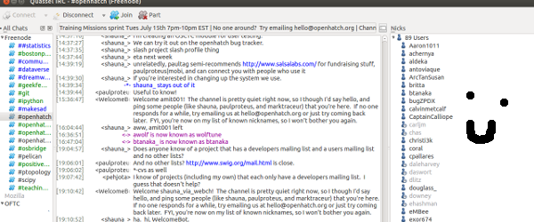
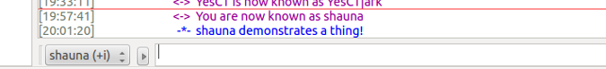
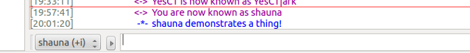

Open Source Communications Tools
3 Most Common Tools
Mailing Lists
IRC
Issue Trackers
Mailing Lists

IRC
IRC is decentralized, which means no one organization or company controls it. Instead, individuals host networks. Make sure your channel AND network are correct!

You can join a channel from the command line!
/join #openhatch
If you use someone's nickname, most clients highlight that so it's easy for them to see. It's considered good form to include the nicks of people you are addressing, although you don't need to do this for every single line.

You can do actions.
 

You can register your nickname!
/msg NickServ REGISTER password youremail@example.com
Then, when you return to the network after being away, you can identify yourself with your registered name and password:
/msg NickServ IDENTIFY account password